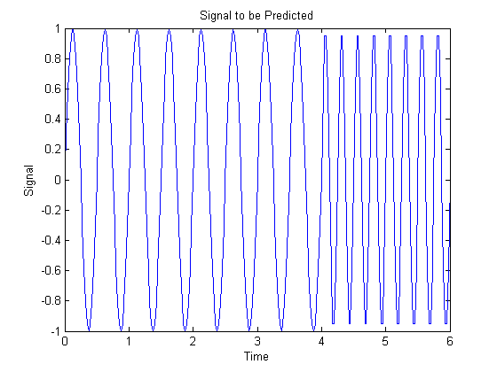
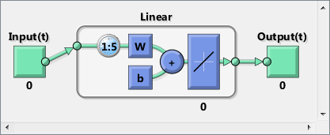
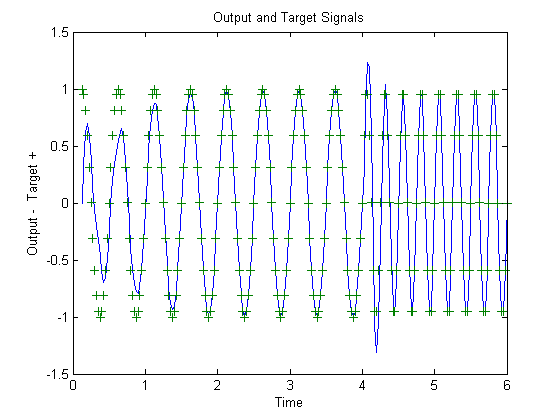
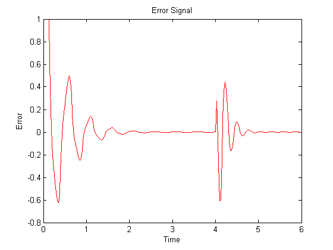

Adaptive Linear Prediction
This example illustrates how an adaptive linear layer can learn to predict the next value in a signal, given the current and last four values.
Contents
Defining a Wave Form
Here two time segments are defined from 0 to 6 seconds in steps of 1/40 of a second.
time1 = 0:0.025:4; % from 0 to 4 seconds time2 = 4.025:0.025:6; % from 4 to 6 seconds time = [time1 time2]; % from 0 to 6 seconds
Here is a signal which starts at one frequency but then transitions to another frequency.
signal = [sin(time1*4*pi) sin(time2*8*pi)]; plot(time,signal) xlabel('Time'); ylabel('Signal'); title('Signal to be Predicted');
Setting up the Problem for a Neural Network
The signal convert is then converted to a cell array. Neural Networks represent timesteps as columns of a cell array, do distinguish them from different samples at a given time, which are represented with columns of matrices.
signal = con2seq(signal);
To set up the problem we will use the first five values of the signal as initial input delay states, and the rest for inputs.
Xi = signal(1:5); X = signal(6:end); timex = time(6:end);
The targets are now defined to match the inputs. The network is to predict the current input, only using the last five values.
T = signal(6:end);
Creating the Linear Layer
The function linearlayer creates a linear layer with a single neuron with a tap delay of the last five inputs.
net = linearlayer(1:5,0.1); view(net)
Adapting the Linear Layer
The function *adapt* simulates the network on the input, while adjusting its weights and biases after each timestep in response to how closely its output matches the target.
It returns the update networks, it outputs, and its errors.
[net,Y] = adapt(net,X,T,Xi);
The output signal is plotted with the targets.
figure plot(timex,cell2mat(Y),timex,cell2mat(T),'+') xlabel('Time'); ylabel('Output - Target +'); title('Output and Target Signals');
The error can also be plotted.
figure E = cell2mat(T)-cell2mat(Y); plot(timex,E,'r') hold off xlabel('Time'); ylabel('Error'); title('Error Signal');
Notice how small the error is except for initial errors and the network learns the systems behavior at the beginning and after the system transition.
This example illustrated how to simulate an adaptive linear network which can predict a signal's next value from current and past values despite changes in the signals behavior.